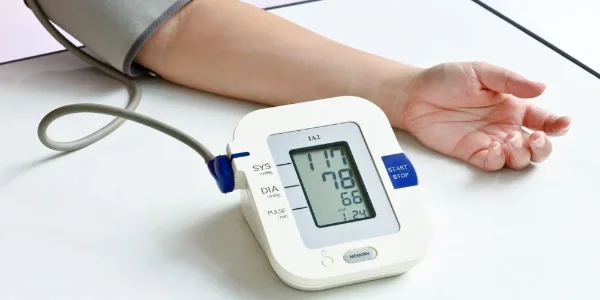

چه زمانی باید فشار خون را جدی بگیریم؟

فشار خون بالا معمولاً هیچ علامتی ندارد و برای همین به آن «قاتل خاموش» میگویند. طبق سازمان جهانی بهداشت، حدود یکسوم بزرگسالان ۳۰ تا ۷۹ ساله فشار خون بالا دارند و نزدیک به نیمی از آنها از بیماری خود خبر ندارند. در این مطلب میخوانید از چه عددی باید فشار خون را جدی گرفت.
فشار خون چند باید باشد؟
فشار خون با دو عدد نوشته میشود: عدد بالا (سیستولیک) و عدد پایین (دیاستولیک)، هر دو بر حسب میلیمتر جیوه. دستهبندی انجمن قلب آمریکا (AHA) که در راهنمای سال ۲۰۲۵ هم حفظ شده، این است:
- طبیعی: کمتر از ۱۲۰ روی کمتر از ۸۰
- بالاتر از طبیعی: ۱۲۰ تا ۱۲۹ روی کمتر از ۸۰
- فشار خون بالا، مرحلهٔ ۱: ۱۳۰ تا ۱۳۹ یا ۸۰ تا ۸۹
- فشار خون بالا، مرحلهٔ ۲: ۱۴۰ یا بیشتر، یا ۹۰ یا بیشتر
- بحران فشار خون: بالاتر از ۱۸۰ و/یا بالاتر از ۱۲۰
سازمان جهانی بهداشت مرز فشار خون بالا را ۱۴۰ روی ۹۰ میداند، اما راهنمای آمریکایی از ۱۳۰ روی ۸۰ شروع میکند. پزشک شما بر اساس وضعیت کلیتان تصمیم میگیرد کدام عدد را هدف بگذارد.
چه زمانی فوراً به اورژانس برویم؟
اگر فشار خون شما بالاتر از ۱۸۰ روی ۱۲۰ است، پنج دقیقه صبر کنید و دوباره اندازه بگیرید. اگر هنوز همینقدر بالا بود و یکی از این علائم را دارید، فوراً با اورژانس (۱۱۵) تماس بگیرید:
- درد قفسهٔ سینه یا تنگی نفس
- کمردرد
- بیحسی یا ضعف در صورت، دست یا پا
- تغییر ناگهانی بینایی یا سختی در حرف زدن
- سردرد شدید، گیجی یا تهوع و استفراغ
اگر عدد بالاتر از ۱۸۰ روی ۱۲۰ است ولی علامتی ندارید، باز هم بیدرنگ با پزشک خود تماس بگیرید.
چه زمانی برای ویزیت معمولی وقت بگیریم؟
- اگر چند بار فشار خون شما ۱۳۰ روی ۸۰ یا بیشتر بوده است.
- اگر بالای ۴۰ سال دارید و در سال گذشته فشارتان را اندازه نگرفتهاید. مایو کلینیک توصیه میکند از ۱۸ سالگی دستکم هر دو سال یک بار و از ۴۰ سالگی هر سال فشار خون اندازهگیری شود.
- اگر دیابت، بیماری کلیه، اضافهوزن یا سابقهٔ خانوادگی فشار خون بالا دارید.
راهنمای ۲۰۲۵ چه چیزهایی را تغییر داد؟
انجمن قلب آمریکا و کالج قلب آمریکا در مرداد ۱۴۰۴ (اوت ۲۰۲۵) راهنمای تازهای منتشر کردند. مهمترین نکتههای آن برای بیماران:
- اندازهگیری فشار خون در خانه برای تأیید تشخیص و پیگیری درمان توصیه میشود.
- در مرحلهٔ ۱ ابتدا تغییر سبک زندگی توصیه میشود و شروع دارو به میزان خطر بیماری قلبی بستگی دارد. برای این کار از ابزار جدیدی به نام PREVENT استفاده میشود.
- در مرحلهٔ ۲ معمولاً درمان با دو دارو، ترجیحاً در یک قرص ترکیبی، شروع میشود.
- برای بیشتر افراد مبتلا، هدف رساندن فشار به کمتر از ۱۳۰ روی ۸۰ است.
- آزمایش ادرار برای بررسی آلبومین (نشانهٔ آسیب کلیه) برای همهٔ بیماران توصیه میشود.
چه کسانی بیشتر در خطرند؟
طبق سازمان جهانی بهداشت و مایو کلینیک، این عوامل خطر فشار خون بالا را بیشتر میکنند: مصرف زیاد نمک، رژیم پرچرب و کممیوه و سبزی، کمتحرکی، سیگار و الکل، اضافهوزن، سن بالای ۶۵ سال، سابقهٔ خانوادگی، دیابت یا بیماری کلیه، استرس و آپنهٔ خواب.
برای کنترل فشار خون چه کنیم؟
- نمک کمتر: سازمان جهانی بهداشت مصرف کمتر از ۲ گرم سدیم در روز را توصیه میکند. راهنمای آمریکایی سقف ۲۳۰۰ میلیگرم و در حالت ایدهآل ۱۵۰۰ میلیگرم را پیشنهاد میدهد.
- تحرک بیشتر: دستکم ۱۵۰ دقیقه ورزش متوسط (مثل پیادهروی تند) یا ۷۵ دقیقه ورزش شدید در هفته.
- وزن مناسب، ترک سیگار و پرهیز از الکل.
- داروها را سر وقت مصرف کنید و بدون مشورت با پزشک قطع نکنید، حتی اگر حالتان خوب است.
پرسشهای رایج
آیا فشار خون بالا علامت دارد؟
بیشتر افراد هیچ علامتی ندارند. سردرد، تنگی نفس یا خوندماغ معمولاً فقط وقتی دیده میشود که فشار خیلی بالا رفته باشد. تنها راه مطمئن، اندازهگیری منظم است.
فشار ۱۳۰ روی ۸۵ خطرناک است؟
این عدد در دستهٔ «فشار خون بالا، مرحلهٔ ۱» قرار میگیرد. خطر فوری ندارد، اما باید با پزشک مشورت کنید تا تصمیم بگیرید تغییر سبک زندگی کافی است یا به دارو هم نیاز دارید.